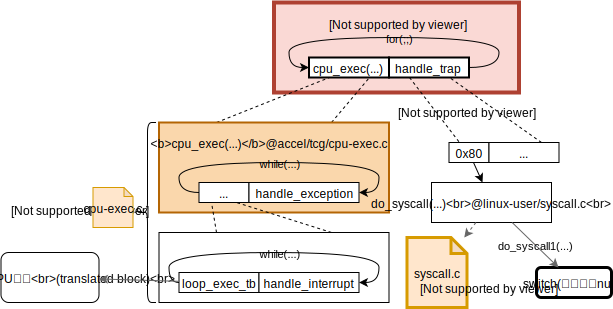

- 精确prot管理CONFIG_PRECISE_PROT
- break方案，若无共享可写页，立刻还原所有私有页
- interp方案，lazy，不还原
共享可写大页问题
- 断点方案CONFIG_SHDWRT_BREAK
- 需要out-of-bound地址=>in-bound地址的转换，用于处理out-of-bound报错
- frag_map是映射in-bound=>out-of-bound，因此需要重新设计。
- 需要out-of-bound地址=>in-bound地址的转换，用于处理out-of-bound报错
- 解释方案CONFIG_SHDWRT_INTERP
- VTLB方案CONFIG_SHDWRT_VTLB
CONFIG_SHDWRT_DBGMSG控制是否输出debug信息
QEMU目前版本4.1.0
2019.8.19
QEMU调研的开端
来自qemu wiki致入门开发者的一句话，
- QEMU does not have a high level design description document - only the source code tells the full story.
这一篇Can I examine Qemu tcg ir code? If so how?提到了QEMU的中间代码叫tiny code generator(TCG)，以及输出tcg的方法-d op。这边回答里还提到了另一篇关于qemu总体架构的回答[QEMU - Code Flow Instruction cache and TCG如下图，

QEMU源码里的文档
Tiny Code Generator (TCG)
目前不支持浮点？？？那是如何做到模拟浮点计算的？？？
- Introduction
- Definitions
- Intermediate representation
- Introduction
- Assumptions
- Code Optimizations
- Instruction Reference此处有详细的TCG IR的格式和含义的说明
- Backend
- …
- Recommended Coding rules for best performance
尝试用QEMU直接运行程序（非全系统模拟）
知道QEMU有全系统模拟和用户程序模拟两种模式，但是不知道该如何搜索使用仅仅模拟用户程序的方法。
上Wikipedia上看到“QEMU can also do emulation for user-level processes”。
于是搜索关键词“qemu emulation user-level process”，找到用qemu-user这个程序。
man qemu-user得知“The qemu-user emulator can run binaries for other architectures but with the same operating system as the current one.”
qemu-user使用例子，
# -d op表示输出没有优化的IR，可以用qemu-i386 -d help查看可以输出的内容；
# -D hellloIR表示输出到文件helloIR里。
qemu-i386 -d op -D helloIR ./hello
2019.8.20
QEMU user emulator
在QEMU根目录下用grep查找qemu-x86_64没结果，查找qemu-system-找到了makefile.target里的内容。其写法为QEMU_PROG=qemu-system-$(TARGET_NAME)$(EXESUF)。遂用指令grep qemu-\$\(TARGET_NAME -r ./查找。
注：grep用的是Basic Regular Exprssions (BRE)，所以可以用RegExr: Learn, Build, & Test RegEx之类的工具验证。
在makefile.target内找到了QEMU_PROG=qemu-$(TARGET_NAME)。于是开始看qemu的makefile来找qemu-user的代码位置。
qemu使用makefile指导编译的项目，但我想用clion看qemu源码，参考官方教程Managing Makefile Projects。
设置clion
创建一个compilation databse
sudo pip3 install compiledb
# 在qemu源码的根目录下
./configure
compiledb make
# compiledb make要求要configure，这和我在build文件夹的configure操作有冲突。索性搞了两个份qemu的源码，一份用来clion看代码，另一份用来编译和debug。
然后就可以了。
编译QEMU user
git clone https://git.qemu.org/git/qemu.git
cd qemu
git submodule init
git submodule update --recursive
✔️Q: 如何编译出qemu-i386?
# 在qemu源码的根目录下
mkdir build
cd build
# configure --help可以获取帮助！
../configure --enable-debug --enable-debug-info --target-list="i386-linux-user x86_64-linux-user"
make
# 在执行安装前，我把apt安装的qemu删掉了，免得引起“误会”
make install
qemu-i386 --version
# 显示如下
# qemu-i386 version 4.1.0
# Copyright (c) 2003-2019 Fabrice Bellard and the QEMU Project developers
# 编译成功！
Debug QEMU
之前一直不知道在哪里break。在编译的configure里添加--enable-debug-info再编译就可以break到函数的名字了！
gdb
# 函数路径可以用which qemu-i386或者whereis qemu-i386查找
(gdb) file /usr/local/bin/qemu-i386
(gdb) break main
# hello程序是用汇编写的helloworld，很小很简单，添加到附录里了。
(gdb) run ~/Desktop/hello
QEMU user源代码
在qemu_root_dir/linux-user
QEMU user总体结构图
**为什么要理清QEMU user的结构图？**因为想知道为什么QEMU-user（对用户程序的模拟）只能在同一系统间进行。（目前QEMU支持linux和bsd操作系统内的用户程序模拟，即linux-mips下可以模拟linux-x86的用户程序但是无法模拟bsd-mips的用户程序。）因此这个问题衍生为用户程序对操作系统的依赖有多大？更精确一些的话，用户程序能有产生哪些行为，所有这些行为需要模拟器在何种程度上进行模拟？
思考之后，认为有两条路可以尝试解决这个疑惑。一是去看各个指令集架构的汇编，看它们能为程序提供哪些行为。二是去看QEMU的源码里是怎么做的。我觉的看汇编，工作量太大，且这个思考已经被无数模拟器的开发者思考过了，所以我决定直接去QEMU的源码里寻找答案。
于是对qemu-user（实际阅读的是qemu-i386）的源码进行阅读后，有了下面这张结构图。

从我所看到的、所领悟到的内容来看，qemu-user的cpu_exec(...)函数应该就是处理翻译执行工作的；handle_trap是我自己给一大片switch代码取得名字，这一部分是处理用户程序对操作系统的依赖，即系统调用。目前从我的视角来看（我的视角可能会有死角），用户程序可能的行为就如上图所示的范围里了。但是心里还一直在想，qemu如何处理shared library？讲道理，qemu只需要和原程序的行为一样到对应的文件夹里去寻找即可，没找到按照原文件报错即可。
注：感觉系统调用（syscall1函数）是除了translated block以外体力活很大的地方。系统调用的知识在《Linux/UNIX系统编程手册（上册）》的第3章有比较详细的讲到，忘记了可以回去查阅。
2019.8.21
QEMU和shared library (shared object)
详细参考How do I load a shared object in C++?和函数dlopen的manual page。
附录
汇编hello world (32位版本)
源码
源码来自：2018年春季汇编语言第三讲编程初步 25页
#hello.S
.section .data
output: .ascii "Hello World\n"
.section .text
.globl _start
_start:
/* output like printf */
movl $4, %eax
movl $1, %ebx
movl $output, %ecx
movl $12, %edx
int $0x80
/* exit */
movl $1, %eax
movl $0, %ebx
int $0x80
编译方法
来自：2018年春季汇编语言第三讲编程初步 51页
# 64位环境编译32位程序
as --32 -o hello.o hello.S
ld -m elf_i386 -o hello hello.o
QEMU里的术语
| 缩 | 全 | 缩 | 全 |
|---|---|---|---|
| TCG | Tiny Code Generator | TB | Translated Block |